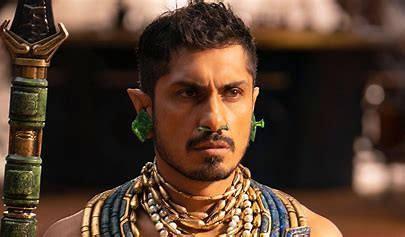
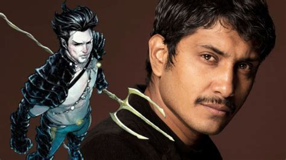

Tenoch Huerta Mejía
|  |  |
Tenoch Huerta Mejía a tourné dans un certain nombre de films, en Amérique latine et en Espagne.Il est l'un des acteurs choisis dans le livre de Mónica Maristain 30 Acteurs Made in Mexico.Il apparaît dans le film Sin nombre réalisé par Cary Joji Fukunaga dans le rôle de Lil' Mago, chef de la faction Tapachula du célèbre gang Mara Salvatrucha.En 2022, il interprète le personnage de Namor dans le film Black Panther: Wakanda Forever.
 |
 |
 |
 |